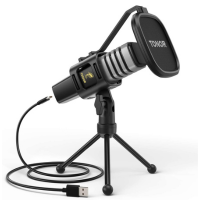

Specification Connectivity technology: Wired Connector: XLR Connector Special feature: Wireless Compatible Devices: radio Colour: Gold Polar pattern: Unidirectional

TONOR USB Microphone
Specification Connectivity technology: USB Connector type: USB Special feature: gaming Compatible devices: Laptop, Personal Computer Colour: Black Polar pattern: Unidirectional